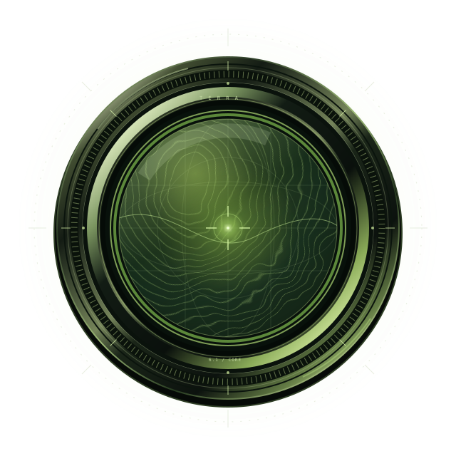

눈앞의 자료부터.
사진, 차트, 기술 도면, 화면 속 정보를 살피고 맥락을 파악합니다.
공개일공식 발표 ↗
빠르게 파악하고, 명확하게 전하고,
이미지와 화면의 이해를 실제 작업으로 잇는 AI.

A CLEAR MIND.
A PRACTICAL PARTNER.
Terra는 일상의 전문 업무를 빠르고 효율적으로 돕는 모델입니다.
이미지와 화면을 읽고, 필요한 판단을 작업으로 연결합니다.
설명은 결과부터. 세부 내용은 이해하기 쉬운 말로 전합니다.
사진, 차트, 기술 도면, 화면 속 정보를 살피고 맥락을 파악합니다.
핵심부터 이야기하고, 필요한 근거와 설명을 간결하고 자연스럽게 이어갑니다.
목표와 범위가 분명한 작업에서, 이해한 내용을 앱과 브라우저의 행동으로 옮깁니다.
공식 모델 설명을 바탕으로 정리한 업무 스타일입니다. OpenAI 소개 ↗
PERCEPTION BECOMES PROGRESS.
이미지와 화면에서
작업에 필요한 정보를 읽습니다.
자료를 비교하고 맥락을 짚어
무엇을 할지 판단합니다.
사용 가능한 도구로 작업하고
결과를 명확하게 전달합니다.
MADE FOR THE WORK IN FRONT OF YOU.
보는 일, 다루는 일, 쓰는 일.
익숙한 업무의 다음 단계를 돕습니다.
상품 사진을 카탈로그와 대조하고, 차트의 정보를 읽거나 기술 도면을 비교합니다.
화면의 정보를 바탕으로 목록을 업데이트하고, 원본 자료를 참고해 양식을 채우는 작업을 돕습니다.
주어진 자료를 바탕으로 제안서를 작성하거나 문장을 다듬고, 독자와 목적에 맞게 내용을 정리합니다.
기존 파일의 한정된 수정처럼 요구사항과 확인 방법이 명확한 코딩 작업에 활용할 수 있습니다.
브라우저·컴퓨터 사용은 도구 설정과 접근 권한에 따라 달라집니다. 공식 활용 가이드 ↗
KNOW THE MODEL. CHECK THE EVIDENCE.
OpenAI가 공개한 평가 점수와
API 모델 사양을 나누어 담았습니다.
도면을 3D 모델로 옮기는 등 전문 업무를 컴퓨터로 끝까지 수행
60.0%이미지와 도표를 읽고 푸는 시각 추론
85.5%데스크톱 앱을 다루는 여러 단계 작업
74.2%명령줄에서 코드 문제를 해결하는 코딩 에이전트 작업
50.3%모든 점수는 OpenAI가 직접 측정해 2026. 10. 26 출시 글에 공개한 값이며, 최대 추론 강도 기준입니다. 중간 강도에서는 Agents’ Last Exam 57.6%, MMMU-Pro 84.6%, OSWorld 2.1 66.7%입니다. 가장 복잡한 코딩 작업에는 OpenAI도 GPT-6.1 Sol과 GPT-6 Astra를 권합니다. 외부 평가 기관의 측정값은 설정에 따라 다를 수 있습니다.
오류를 일부러 유도하는 프롬프트로 만든 OpenAI 내부 평가에서, 사실 오류가 하나라도 들어간 답변 비율이 최대 추론 강도 기준 GPT-5.6 Terra 22.3%에서 4.3%로 줄었습니다(GPT-6.1 Sol 4.4%, GPT-6 Astra 4.2%). 낮은 강도에서는 53.6%에서 16.7%로 줄었습니다. 오류를 끌어내도록 만든 평가라 일반 사용에서의 오류율과는 다릅니다.
최대 1,050,000 토큰의 컨텍스트
최대 128,000 토큰 출력
none · low · medium · high · xhigh · max
위 숫자는 API 모델 사양이며, 벤치마크 점수나 정확도를 뜻하지 않습니다. 앱에서의 한도와 설정은 다를 수 있습니다.
YOUR WORK IS THE TEST.
같은 이미지와 같은 질문으로 비교하고, 식별한 항목과 읽어낸 수치를 원본 자료에 대조하세요.
공식 모델 선택 가이드를 참고한 평가 예시입니다. 동일한 자료·요구사항·추론 강도로 Terra와 GPT-6.1 Sol을 비교하고, 결과 품질과 완료 시간을 함께 확인하세요. 이 페이지에서 평가를 실행하거나 점수를 산출하지는 않습니다.
FROM A TASK TO A NEXT STEP.
작업을 하나 골라보세요.
Terra의 활용 흐름을 살펴볼 수 있습니다.
명확한 자료와 목표에서 시작합니다.
SEE → MATCH → UPDATE
공급업체의 상품 사진을 카탈로그와 비교하고, 일치하는 항목을 찾아 목록을 업데이트하는 작업을 도울 수 있습니다.
매칭 결과와 확인이 필요한 항목 목록
A CLEARER VIEW. A REAL NEXT STEP.
살펴볼 이미지, 다듬을 문장, 화면 속 작업.
지금 필요한 일에서 시작해 보세요.
ChatGPT Work · Codex · OpenAI API